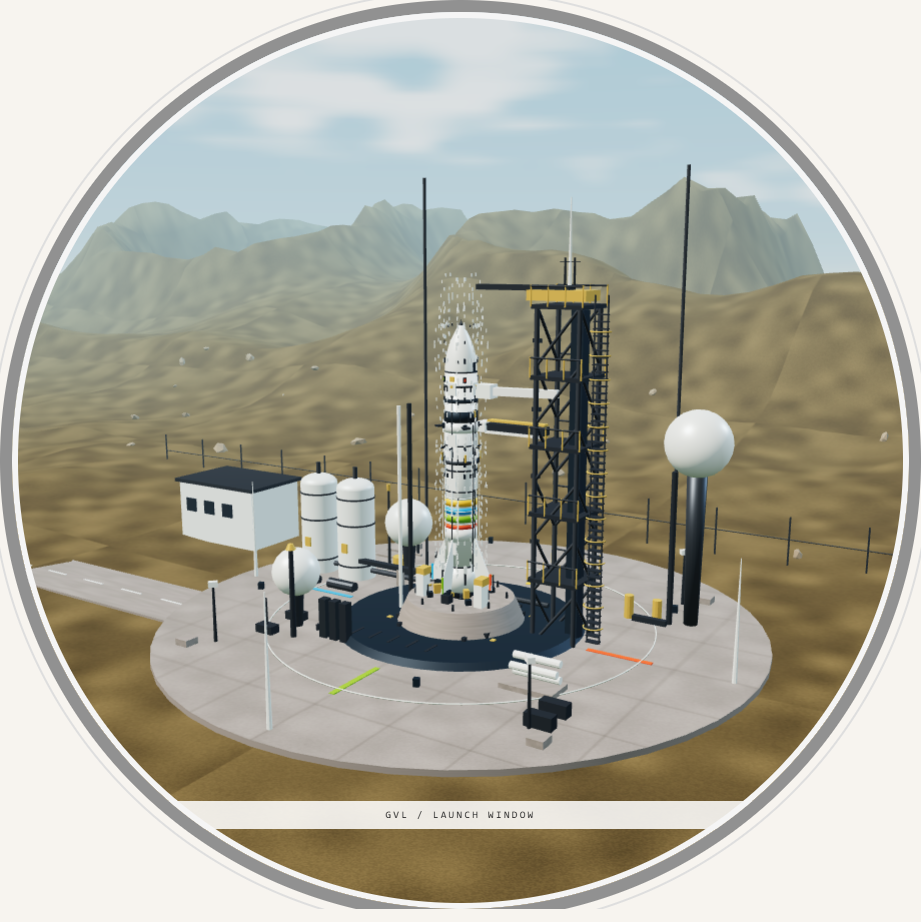
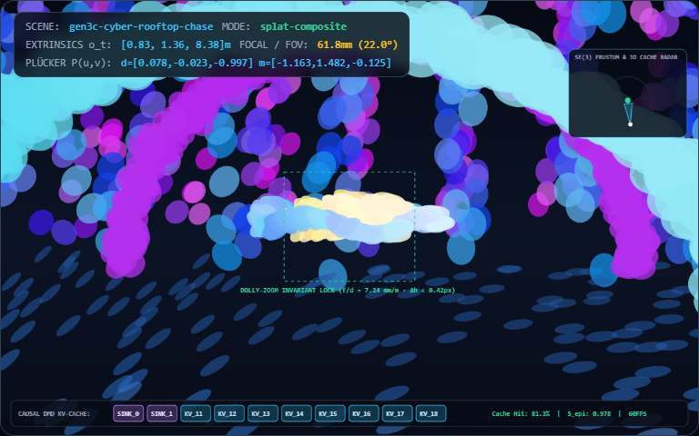

01 / Canvas 2D + Cycles Relief + Verlet
风起壁间 · 敦煌飞天
四身原创飞天，执灯照壁、揭色离壁、巡游归位。结合 Blender 4.5 Cycles 烘焙的莫高窟四龛藻井浮雕底壁、双凤宝相花钉、琵琶明珠花钿扣与 Verlet 物理丝绸飘带（Stage 466，p95 ≤ 33.3ms）。
入窟探索 →GHCP Harness Engineering · Code Becomes a World · Stage 466 (522 Curated Works)
基于 GitHub Copilot Harness 四阶段工程闭环（Research → Plan → Implement → Harness Gate），不依赖商业视频生成大模型或沉重手工渲染管线，直接把自然语言转化为可交互、可审计、零外部运行时依赖的 60FPS WebGL2 / Three.js / Canvas 2D / SVG 逆运动学实时动画。现已收录 Stage 466（522 项前沿动画作品谱系）与五大标志性实时动画演示：敦煌飞天、Astra 火星造景、白色火箭点火升空、“鹈鹕骑自行车”三方同题竞技场、以及《知识讲解类动画制作工作台 (One-Sentence-Video × 三大爆款短视频模板)》。
四身原创飞天，执灯照壁、揭色离壁、巡游归位。结合 Blender 4.5 Cycles 烘焙的莫高窟四龛藻井浮雕底壁、双凤宝相花钉、琵琶明珠花钿扣与 Verlet 物理丝绸飘带（Stage 466，p95 ≤ 33.3ms）。
入窟探索 →
NASA MOLA 16ppd 实测激光高程驱动真实球面几何，叠加 Stage 466 最新 325/313 阶谐波微地貌核、Blender Cycles 无缝微地貌法线贴图与假想古海洋大气散射，支持导出 GLB。
进入观测台 →
Blender 4.5 MCP 脚本化生成的白色火箭、钛合金栅格翼、五机拉瓦尔喷管、太阳风波分析仪传感器整流罩与 37 阶谐波普朗特-迈耶剪切马赫盘尾焰（Stage 466，p95 ≤ 50ms）。
进入发射场 →
围绕经典“鹈鹕骑自行车”动画命题，同屏盲测 HVE-Core v3.3.101（93.4分：环法四赛段坡度动力学+风洞流线+11速电变+0.00px 零滑移解析逆运动学）、AGENT-FORGE（91.8分：海滨抛鱼接鱼+翘头特技）与 FAF v2（90.5分：X-Ray 骨骼透视）。
进入三方同屏竞技场 →
逆向拆解抖音/B站三大爆款知识讲解视频（【小哲讲Agent】MCP/Skill/Tools 黑曜石渐进节点树、【小哲讲大模型】RAG 四阶漏斗与 PDF 碎裂爆破、【第四种黑猩猩】DeepSeek 单卡 $38 算力经济学账本），内置实时 3×3 视觉密度门禁（9/9 活跃网格）、cut-the-curve 接缝速度曲线（η≥0.87）、WebAudio 因果音效与 STORYBOARD.md 导出。
进入知识讲解动画工作台 →
复刻 CVPR 2025/2026 最热可控 4D 视频突破（NVIDIA GEN3C 3D 时空缓存、Diff4Splat 4D 可变形高斯核与 MotionStream 实时轨迹笔刷）：内置 360° 环绕、FPV 穿插、希区柯克变焦与子弹时间定格四套经典运镜，实时解算 6D Plücker 射线场 (d, m = o × d)，支持双主体轨迹笔刷与 CAMERA_RIG.json 导出。
进入 4D 运镜导演台 →每一个动画效果都附带完整技术研究文档、55/55 单元与 Playwright E2E 验证记录：什么改变了几何，什么只是光影，什么来自实测高程或解析逆运动学，什么来自艺术化表达。